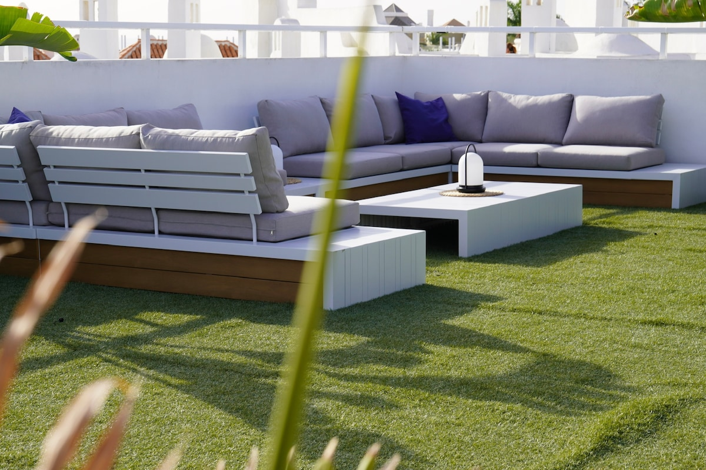
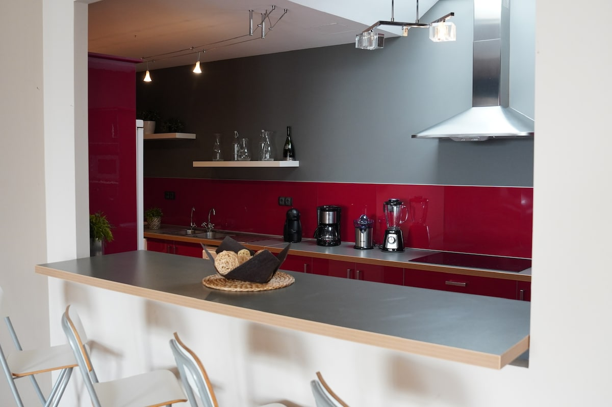
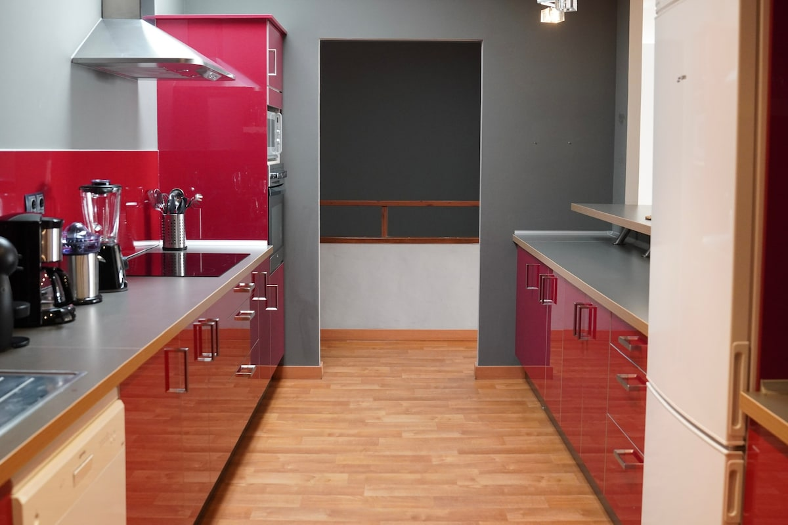
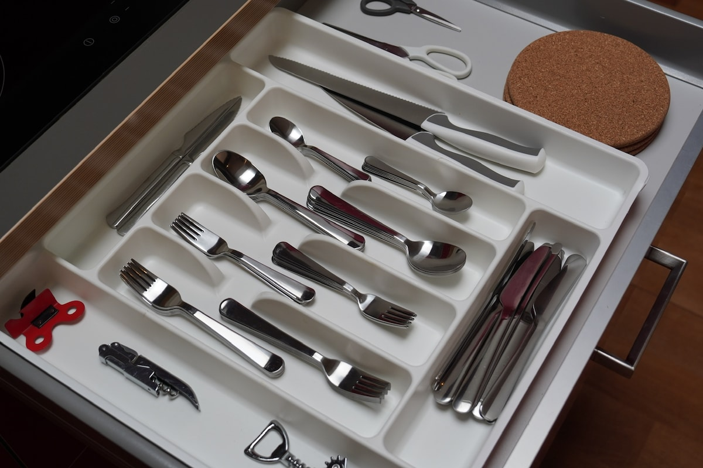
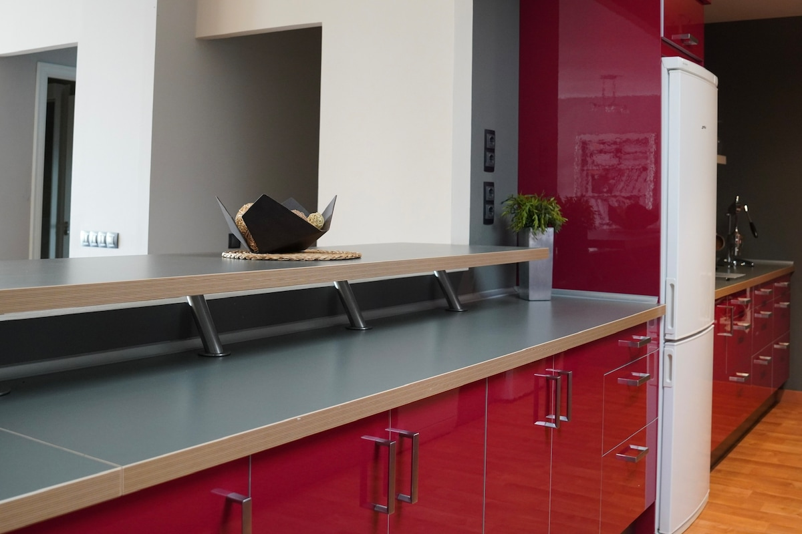
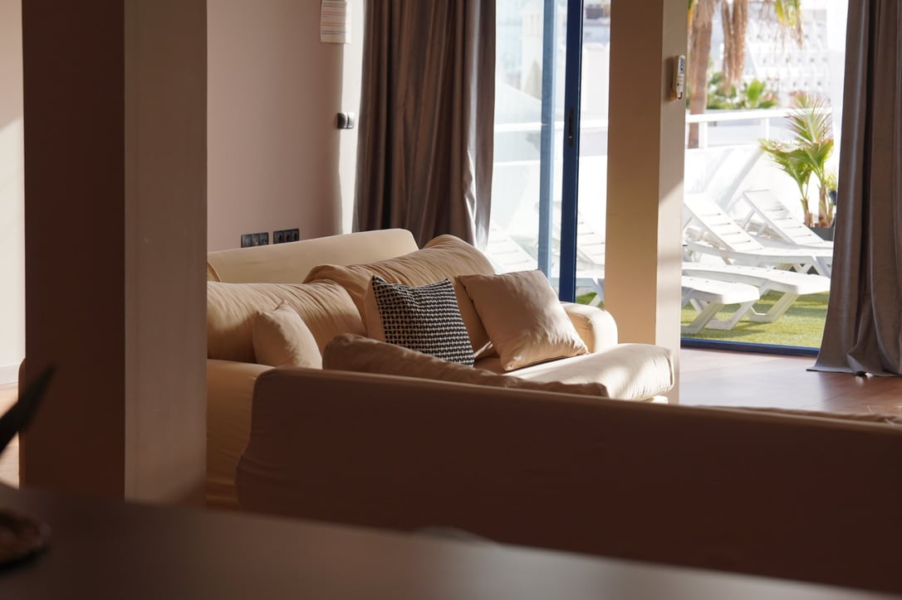
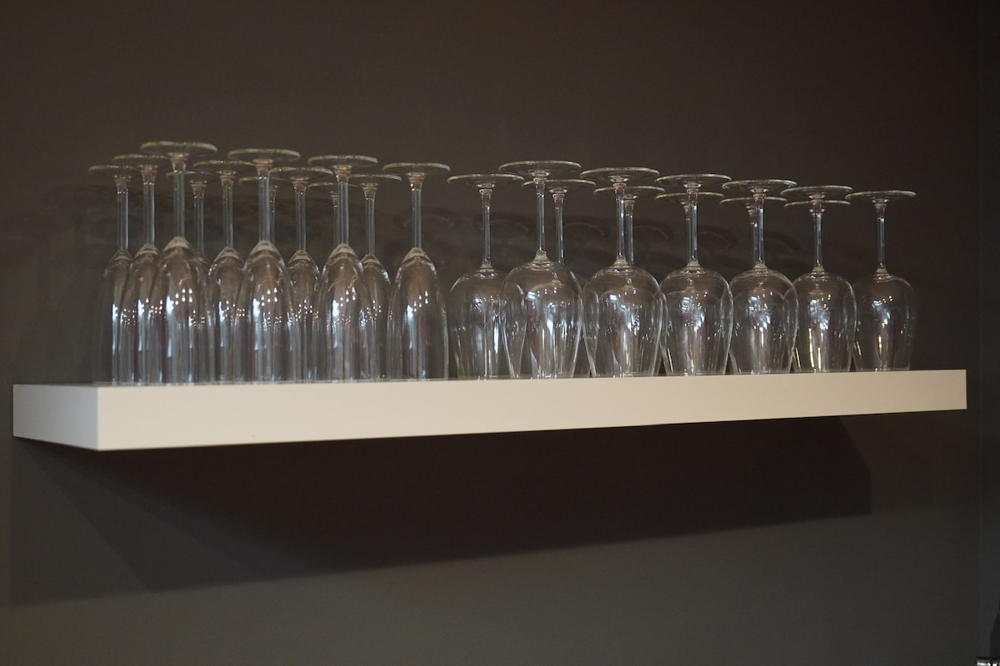
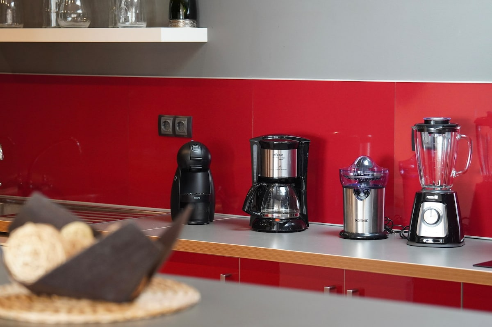
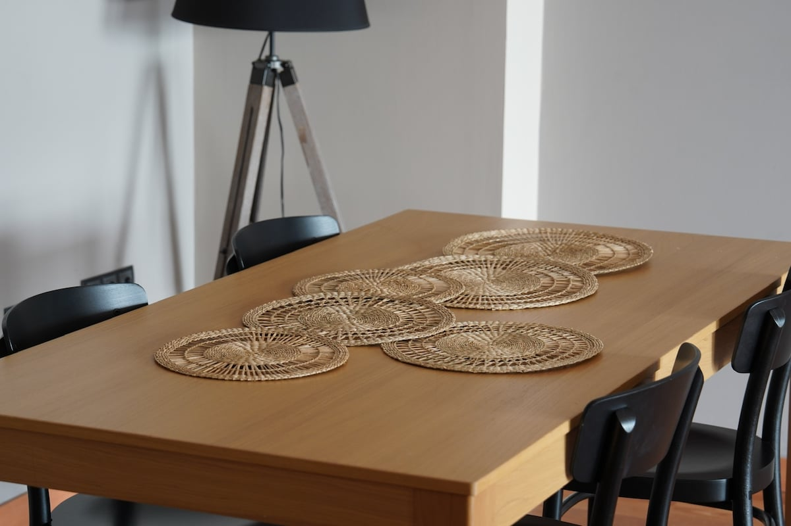
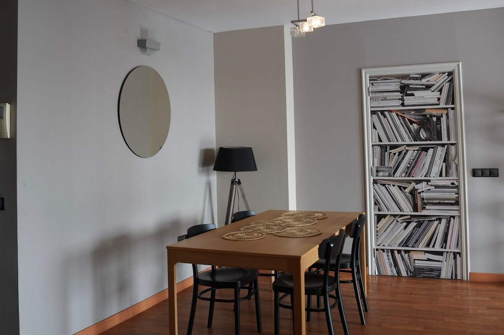
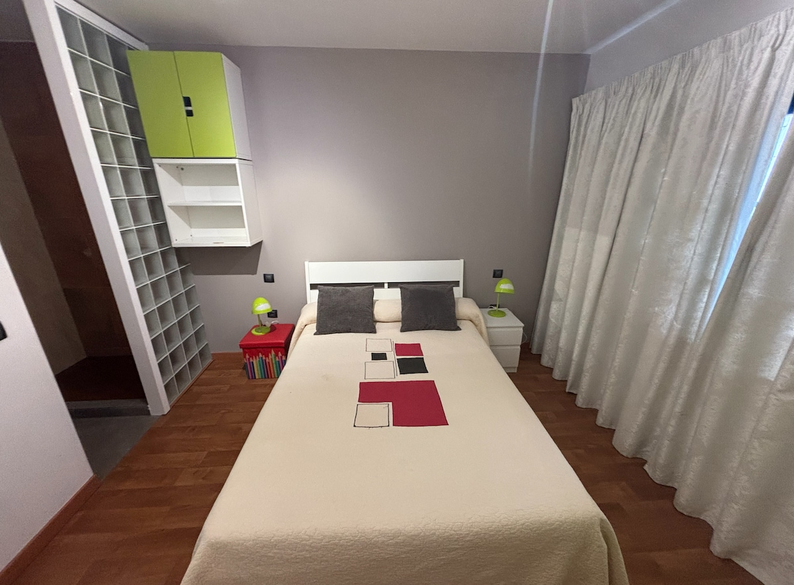
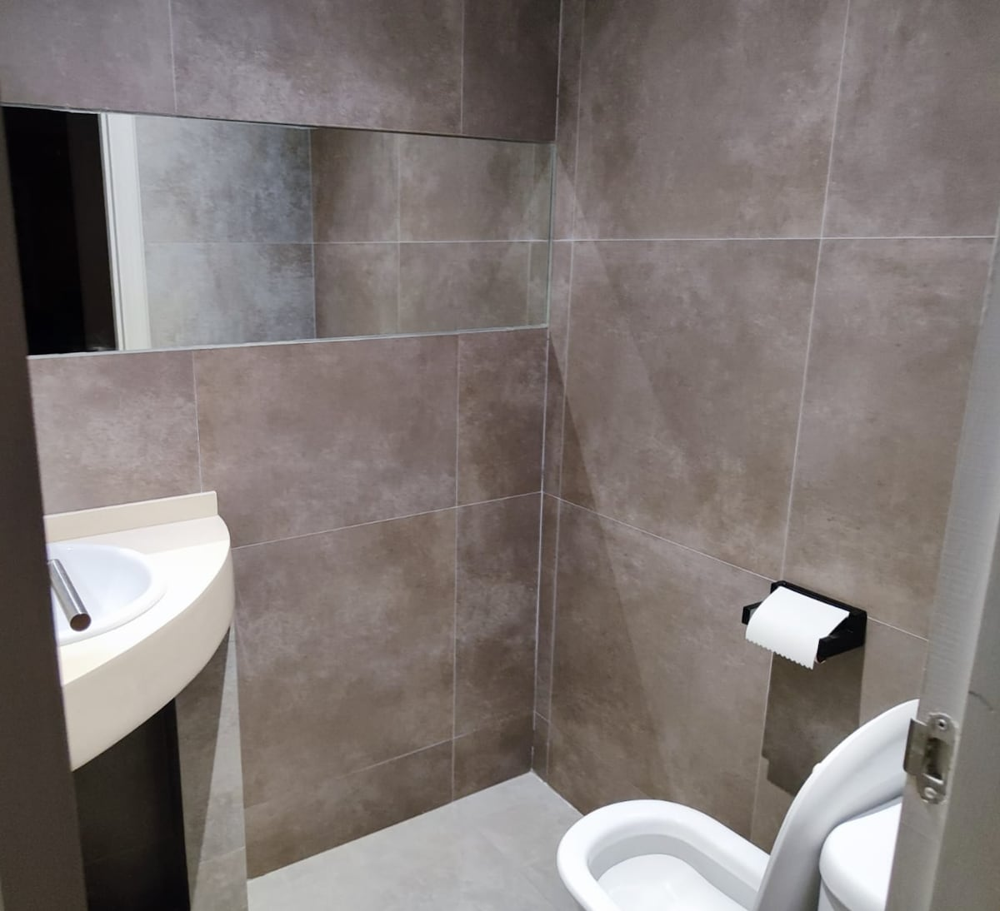
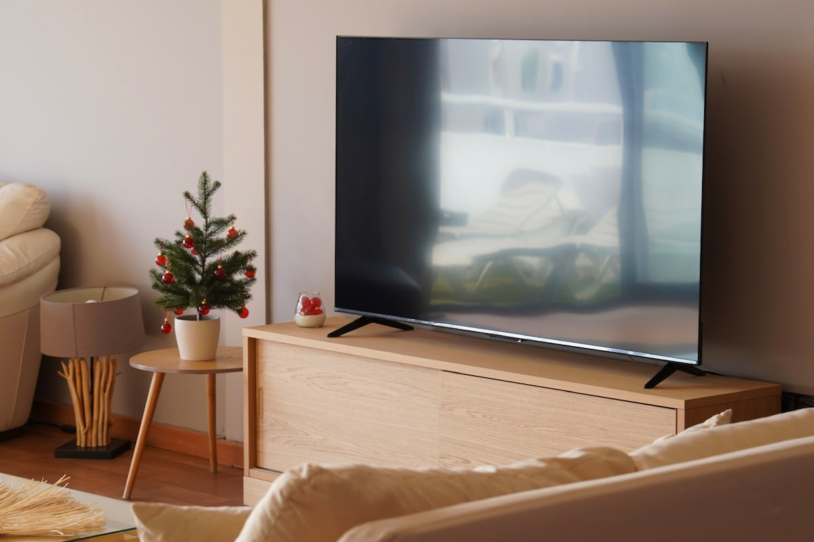
Questo attico è un rifugio perfetto a soli 5 minuti a piedi dalla spiaggia. Ampia, luminosa e progettata per il comfort, dispone di quattro camere da letto, tre bagni e una cucina completamente attrezzata con forno, microonde e lavatrice. Rilassati nel salotto all'aperto, accendi il barbecue o cena sotto le stelle sulla terrazza.
Con amache per il relax, un parcheggio privato e una grande TV, è l'ideale per famiglie o gruppi in cerca di un'esperienza casalinga. Perfetta per vacanze indimenticabili!
Contattaci per disponibilità e preventivo
💬 Contattaci su WhatsApp